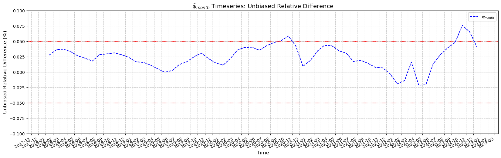
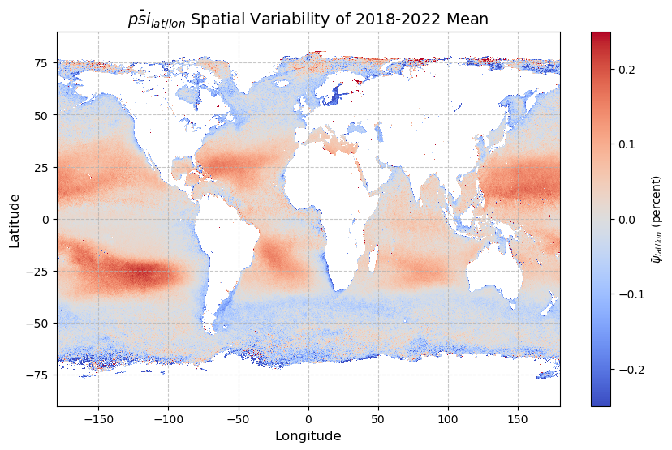

import os
import subprocess
from datetime import timezone, datetime
import numpy.ma as ma
import matplotlib.pyplot as plt
import matplotlib.dates as mdates
from netCDF4 import Dataset
import netCDF4
# added necessary packages
from dateutil import rrule
from dateutil.parser import parse
import xarray as xr
import pandas as pdPrimary Productivity Unbiased Relative Difference Analysis
Unbiased relative difference analysis of the interim and legacy products
History | Updated Nov 2025
Objectives
Calculate the mean unbiased relative difference (ψnetPP) of the interim VIIRS netPP (netPPVIIRS) and legacy MODIS netPP (netPPMODIS) products for each month from the timeseries shared between the two sensors.
We are using this statistic to track the similarities in netPP values between interim VIIRS and legacy MODIS datasets to provide validation that the interim netPP products can be reliably used for continuity in long-term productivity analyses.
For VIIRS-SNPP, the result will be a 120-month (10-year) mean monthly timeseries of ψnetPP.
For VIIRS-NOAA20, the result will be a 60-month (5-year) mean monthly timeseries of ψnetPP.
ψnetPP was calculated as the difference between VIIRS and MODIS netPP values divided by the mean of VIIRS and MODIS.
Normalizing by the mean of the two values avoids arbitrarily selecting one product as reference.
Satellite Datasets:
Unbiased Relative Difference
The unbiased relative difference (ψnetPP) is calculated, for each pixel as follows:
$ ^{netPP} =
$
Where: * The difference between VIIRS-based netPP (netPPVIIRS) and MODIS-based (netPPMODIS) netPP values for that pixel is divided by the mean of netPPVIIRS and netPPMODIS.
Datasets Overview
We will be creating the pixel-by-pixel unbiased relative difference (ψnetPP) for the globe for each monthy at a 9km resolution across two datasets, MODIS-Aqua and VIIRS-NOAA-20. Here are the available legacy and interim primary productivity products:
- Primary Productivity, MODIS Aqua, Science Quality, Global, 9km, 2013-2022, (Monthly Composite)
- Distributed via the West Coast Node ERDDAP dataset at the following link: > https://coastwatch.pfeg.noaa.gov/wcn/erddap/griddap/productivity_modis_aqua_monthly_9km.graph
- Primary Productivity, VIIRS SNPP, Science Quality, Global, 9km, 2013-2022 (Monthly Composite)
- Distributed via the West Coast Node ERDDAP dataset at the following link: > https://coastwatch.pfeg.noaa.gov/wcn/erddap/griddap/productivity_viirs_snpp_monthly_9km.graph
- Primary Productivity, VIIRS NOAA20, Science Quality, Global, 9km, 2018-2022, (Monthly Composite)
- Distributed via the West Coast Node ERDDAP dataset at the following link: > https://coastwatch.pfeg.noaa.gov/wcn/erddap/griddap/productivity_viirs_noaa20_monthly_9km.graph
Tutorial for this notebook
The VIIRS-NOAA20 and MODIS-Aqua netPP datasets will be used in this notebook to generate a timeseries of monthly mean values of ψnetPP. We will access the data using the xr_open_ds() function below. The function requires:
* The url of the ERDDAP server being use, in this case: https://coastwatch.pfeg.noaa.gov/wcn/erddap
- The ID of the datasets, in this case productivity_viirs_noaa20_monthly_9km and productivity_modis_aqua_monthly_9km.
Resource requirements
Jupyter Notebook
Python 3 with the modules included within the Import packages section below
The CDL file located in the relative folder on GitHub.
The name of the file is
psi_nasa_9k_mr_dr.cdl.The cdl file has latitude and longitude that have been gridded to the 9km NOAA CoastWatch standard ocean color grid.
The template file is populated with the latitude and longitude data and then renamed.
Internet connection
Import Packages
Create global variables
Global variables are used to set up the file structure, directory paths, and template files required for processing trends.
- BASE_DIR is the base directory defined for the project, and the root for all other subdirectories.
- ODATA_DIR is where the output trends file will be located.
- WORK_DIR is where the temporary files used during data processing are located.
- RESOURCES_DIR is where the CDL file will be located.
ROOT_DIR = "/Users/madisonrichardson/netpp"
ODATA_DIR = os.path.join(ROOT_DIR, "data/matrix/psi")
WORK_DIR = os.path.join(ROOT_DIR, "work")
RESOURCES_DIR = os.path.join(ROOT_DIR, "resources")
DIR_LIST = [ROOT_DIR,
WORK_DIR,
ODATA_DIR,
RESOURCES_DIR]
for dr in DIR_LIST:
os.makedirs(dr, exist_ok=True)
print(len(DIR_LIST), 'directories validated')4 directories validatedMake Some Useful Functions
def xr_open_ds(
e_id, e_source="https://coastwatch.pfeg.noaa.gov/wcn/erddap", dap="griddap"
):
"""
Open a remote ERDDAP dataset as an Xarray dataset.
Constructs the ERDDAP dataset URL using the provided dataset ID ('e_id'),
server URL ('e_source'), and data access protocol ('dap'). Then it uses Xarray
to open the dataset from the remote source.
Args:
e_id (str): ERDDAP dataset ID.
e_source (str, optional): URL to ERDDAP server. Defaults to 'https://coastwatch.pfeg.noaa.gov/wcn/erddap'.
You can change it to any ERDDAP server.
dap (str, optional): The data access protocol type. Defaults to 'griddap' which is used for
accessing gridded datasets.
Returns:
array: Xarray dataset object
"""
# remove any trailing /
e_source = e_source.rstrip("/")
erddap_url = "/".join([e_source, dap, e_id])
return xr.open_dataset(erddap_url)def ensure_time_centered_on_16th(ds):
"""
Ensure that all time values in an xarray Dataset are centered on the 16th of each month.
If not, replace the time values with ones that are centered.
Args:
ds (xarray.Dataset): The input dataset with a 'time' coordinate.
Returns:
xarray.Dataset: A dataset with time values centered on the 16th.
"""
time_values = pd.to_datetime(ds.time.values)
days = time_values.day
if all(day == 16 for day in days):
print("Time values are already centered on the 16th.")
return ds
else:
print("Time values are not centered. Replacing day with 16...")
centered_time = time_values.map(lambda x: x.replace(day=16))
ds = ds.copy()
ds['time'] = centered_time
return dsdef calculate_psi_dr(minuend_data, subtrahend_data):
"""
Calculate the unbiased relative difference (psi) between the two
datasets.
Nerd Notation
minuend is math-speak for the value substracted from.
subtrahend is math-speak for the value that is substracted.
Args:
minuend_data (ma.MaskedArray): The dataset where values will be
subtracted.
subtrahend_data (ma.MaskedArray): The dataset that will be subtracted
from 'minuend_data'.
Returns:
ma.MaskedArray: The array of unbiased relative difference (psi) values
where missing data remains masked.
"""
# Calculate the average of input datasets
avg = ma.divide(ma.add(minuend_data, subtrahend_data), 2)
# Calculate unbiased relative difference (psi)
psi_values = ma.divide(ma.subtract(minuend_data, subtrahend_data), avg)
return psi_valuesdef plot_monthly_psi_timeseries(dates, psi_mean, ymin=-0.1, ymax=0.1):
"""
Plot the monthly mean relative difference time series.
Args:
dates (pd.DatetimeIndex): Dates centered on the 16th of each month.
psi_mean (xarray.DataArray or 1D array): Monthly mean psi netPP values.
ymin (float): Lower y-axis limit.
ymax (float): Upper y-axis limit.
"""
plt.figure(figsize=(20, 6))
plt.plot(dates, psi_mean, 'b--', label=r'$\bar{\psi}_{month}$')
plt.axhline(0, color='black', linewidth=0.5)
plt.axhline(0.05, color='red', linestyle=':', linewidth=1)
plt.axhline(-0.05, color='red', linestyle=':', linewidth=1)
plt.ylim(ymin, ymax)
plt.title(r'$\bar{\psi}_{month}$ Timeseries: Unbiased Relative Difference', fontsize=14)
plt.ylabel('Unbiased Relative Difference (%)', fontsize=12)
plt.xlabel('Time', fontsize=12)
plt.gca().xaxis.set_major_locator(mdates.MonthLocator())
plt.gca().xaxis.set_major_formatter(mdates.DateFormatter('%Y-%m'))
plt.gcf().autofmt_xdate()
plt.grid(True, linestyle='--', alpha=0.7)
plt.legend()
plt.show()def plot_spatial_psi_mean(my_date, ds, da, title=None, vmin=-0.25, vmax=0.25):
"""
Plot the spatial mean ΔnetPP across time.
Args:
ds (xarray.Dataset): Dataset containing coordinates (longitude, latitude).
da (xarray.DataArray): psi netPP data array with dimensions (time, lat, lon).
title (str): Optional plot title.
vmin (float): Minimum value for color scale.
vmax (float): Maximum value for color scale.
"""
# Assign the centered time back to the dataset
da['time'] = my_date
psi_mean = da.mean(dim="time", skipna=True).values
plt.figure(figsize=(10, 6))
plt.pcolormesh(ds.longitude, ds.latitude, psi_mean, cmap='coolwarm', vmin=vmin, vmax=vmax)
cbar = plt.colorbar()
cbar.set_label(r'$\bar{\psi}_{lat/lon}$ (percent)')
if title:
plt.title(title, fontsize=14)
else:
plt.title(r'$\bar{\psi}_{lat/lon}$ Spatial Variability', fontsize=14)
plt.xlabel('Longitude', fontsize=12)
plt.ylabel('Latitude', fontsize=12)
plt.grid(True, linestyle='--', alpha=0.7)
plt.show()Set Up Parameters
Initialize the parameters required for the absolute relative difference calculation:
start_date and end_date: Define the date range for the analysis (format: YYYY-MM-DD). Monthly composites are centered on the 16th of each month.
sensor1 and sensor2: Specify the two satellite sensors for absolute relative difference analysis (‘modis’, ‘snpp’, or ‘noaa20’) (we are using ‘modis’ and ‘noaa20’).
ncvar: The name of the variable being analyzed (we are using ‘productivity’)
overwrite: If ‘True’, exisiting output files will be replaced.
start_date = "2018-01-16"
end_date = "2022-12-16"
# Define sensor (either "snpp" or "noaa20" or "modis")
sensor1 = "modis"
sensor2 = "noaa20"
# Valid sensors list
valid_sensors = {"modis", "snpp", "noaa20"}
# Check both sensors are valid
for s in (sensor1, sensor2):
if s not in valid_sensors:
raise ValueError(f"The sensor '{s}' is not a valid option. Choose from: {valid_sensors}")
ncvar = 'productivity'
overwrite = TruePrepare Output File
Define file naming conventions for the output file.
nc_filename: Output file name (psi results).
Skips processing if the output file already exists and ‘overwrite’ is ‘False’.
# Define the final output file path
nc_filename = f'netpp_psi_{sensor1}_{sensor2}.nc'
nc_file_path = os.path.join(ODATA_DIR, nc_filename)
# Add logic to not overwrite existing files
if os.path.isfile(nc_file_path):
if not overwrite:
print(f'{nc_filename} already exists for {sensor1} and {sensor2}')
else:
print(f'Overwriting {nc_filename} for {sensor1} and {sensor2}')Prepare and Run ncgen Command
Generate an initial NetCDF file using the ‘ncgen’ tool and a CDL template.
Creates filenames for the output NetCDF (‘ncgen_ofile_nc’) and CDL input (‘ncgen_ifile_cdl’).
Constructs a shell command for ‘ncegn’ to convert the CDL file into a NetCDF file.
Executes the command using ‘subprocess.call’ and checks for errors.
# Prepare ncgen input and output filenames
now = datetime.now()
ncgen_ofile_nc = f"ncgen_trend_ofile{now:%Y%m%d%H%M%S}.nc"
# Create temporary file to accept output data from a .cdl file
ncgen_ifile_cdl = 'psi_nasa_9k_mr_dr.cdl'
# Run ncgen command
myCmd1 = " ".join(
[
"ncgen",
"-o",
os.path.join(WORK_DIR, ncgen_ofile_nc),
os.path.join(RESOURCES_DIR, ncgen_ifile_cdl),
]
)
print(myCmd1)
print("ncgen", subprocess.call(myCmd1, shell=True))ncgen -o /Users/madisonrichardson/netpp/work/ncgen_trend_ofile20251120094351.nc /Users/madisonrichardson/netpp/resources/psi_nasa_9k_mr_dr.cdl
ncgen 0Fetching Satellite Datasets from ERDDAP
Using the xr_open_ds function we defined above, we will be retrieving the MODIS, SNPP, or NOAA20 data from ERDDAP.
Set the base URL and dataset IDs for accessing MODIS, SNPP, or NOAA20 primary productivity data from an ERDDAP server.
It is optional to specify a variable, but in this case we are specifying the variable productivity which we define earlier as ncvar.
# Set the url of the ERDDAP server
erddap_url = "https://coastwatch.pfeg.noaa.gov/wcn/erddap"
# Set the ERDDAP dataset ID for each sensor
erddap_id1 = f"productivity_modis_aqua_monthly_9km"
erddap_id2 = f"productivity_viirs_{sensor2}_monthly_9km"
print(f"Sensor 1: {sensor1.upper()}, Dataset ID: {erddap_id1}")
print(f"Sensor 2: {sensor2.upper()}, Dataset ID: {erddap_id2}")
ds1 = xr_open_ds(erddap_id1, e_source=erddap_url)
print(f"{sensor1.upper()} dataset: {ds1}")
ds2 = xr_open_ds(erddap_id2, e_source=erddap_url)
print(f"{sensor2.upper()} dataset: {ds2}")Sensor 1: MODIS, Dataset ID: productivity_modis_aqua_monthly_9km
Sensor 2: NOAA20, Dataset ID: productivity_viirs_noaa20_monthly_9km
MODIS dataset: <xarray.Dataset> Size: 4GB
Dimensions: (time: 120, latitude: 2160, longitude: 4320)
Coordinates:
* time (time) datetime64[ns] 960B 2013-01-16T08:00:00 ... 2022-12-...
* latitude (latitude) float64 17kB 89.96 89.88 89.79 ... -89.88 -89.96
* longitude (longitude) float64 35kB -180.0 -179.9 -179.8 ... 179.9 180.0
Data variables:
productivity (time, latitude, longitude) float32 4GB ...
Attributes: (12/55)
acknowledgement: Support provided by NOAA CoastWatch and CSU COAST
cdm_data_type: Grid
contributor: Dale Robinson, Jesse Espinoza, Isaac Schroeder
contributor_role: project management, development, production
Conventions: CF-1.10, ACDD-1.3, COARDS
creator_name: NOAA CoastWatch West Coast Node
... ...
time_coverage_end: 2022-12-16T08:00:00Z
time_coverage_resolution: PD1
time_coverage_start: 2013-01-16T08:00:00Z
title: Primary Productivity, MODIS Aqua, Science Qual...
Westernmost_Easting: -179.9583
westernmost_longitude: -180.0
NOAA20 dataset: <xarray.Dataset> Size: 2GB
Dimensions: (time: 60, latitude: 2160, longitude: 4320)
Coordinates:
* time (time) datetime64[ns] 480B 2018-01-16T12:00:00 ... 2022-12-...
* latitude (latitude) float32 9kB 89.96 89.88 89.79 ... -89.88 -89.96
* longitude (longitude) float32 17kB -180.0 -179.9 -179.8 ... 179.9 180.0
Data variables:
productivity (time, latitude, longitude) float32 2GB ...
Attributes: (12/48)
acknowledgement: This project was funding by a grant from the N...
cdm_data_type: Grid
Conventions: CF-1.10, ACDD-1.3, COARDS
creator_email: coastwatch.info@noaa.gov
creator_name: NOAA/STAR/NESDIS/CoastWatch/West Coast Node
creator_type: institution
... ...
testOutOfDate: now-116days
time_coverage_end: 2022-12-16T12:00:00Z
time_coverage_resolution: P1D
time_coverage_start: 2018-01-16T12:00:00Z
title: Primary Productivity, VIIRS NOAA20, Science Qu...
Westernmost_Easting: -179.9583Subset the dataset to include only the start and end dates
da1 = ds1.sel(time=slice(start_date, end_date))
print(f"{sensor1.upper()} dataset: {da1}")
da2 = ds2.sel(time=slice(start_date, end_date))
print(f"{sensor1.upper()} dataset: {da2}")MODIS dataset: <xarray.Dataset> Size: 2GB
Dimensions: (time: 60, latitude: 2160, longitude: 4320)
Coordinates:
* time (time) datetime64[ns] 480B 2018-01-16T08:00:00 ... 2022-12-...
* latitude (latitude) float64 17kB 89.96 89.88 89.79 ... -89.88 -89.96
* longitude (longitude) float64 35kB -180.0 -179.9 -179.8 ... 179.9 180.0
Data variables:
productivity (time, latitude, longitude) float32 2GB ...
Attributes: (12/55)
acknowledgement: Support provided by NOAA CoastWatch and CSU COAST
cdm_data_type: Grid
contributor: Dale Robinson, Jesse Espinoza, Isaac Schroeder
contributor_role: project management, development, production
Conventions: CF-1.10, ACDD-1.3, COARDS
creator_name: NOAA CoastWatch West Coast Node
... ...
time_coverage_end: 2022-12-16T08:00:00Z
time_coverage_resolution: PD1
time_coverage_start: 2013-01-16T08:00:00Z
title: Primary Productivity, MODIS Aqua, Science Qual...
Westernmost_Easting: -179.9583
westernmost_longitude: -180.0
MODIS dataset: <xarray.Dataset> Size: 2GB
Dimensions: (time: 60, latitude: 2160, longitude: 4320)
Coordinates:
* time (time) datetime64[ns] 480B 2018-01-16T12:00:00 ... 2022-12-...
* latitude (latitude) float32 9kB 89.96 89.88 89.79 ... -89.88 -89.96
* longitude (longitude) float32 17kB -180.0 -179.9 -179.8 ... 179.9 180.0
Data variables:
productivity (time, latitude, longitude) float32 2GB ...
Attributes: (12/48)
acknowledgement: This project was funding by a grant from the N...
cdm_data_type: Grid
Conventions: CF-1.10, ACDD-1.3, COARDS
creator_email: coastwatch.info@noaa.gov
creator_name: NOAA/STAR/NESDIS/CoastWatch/West Coast Node
creator_type: institution
... ...
testOutOfDate: now-116days
time_coverage_end: 2022-12-16T12:00:00Z
time_coverage_resolution: P1D
time_coverage_start: 2018-01-16T12:00:00Z
title: Primary Productivity, VIIRS NOAA20, Science Qu...
Westernmost_Easting: -179.9583Calculate Monthly Psi
Extract productivity values from MODIS and NOAA20 datasets.
Convert the time coordinates to datetime objects and normalize them to remove hour/minute differences.
Identify common dates that appear in both datasets.
Loop over months, compute the absolute relative difference, and save the result as a tuple of (timestamp, delta array) to prepare the full time series of mean ψ values to write into the NetCDF output file.
# Extract productivity variable from each dataset
modis_data = da1[ncvar]
viirs_data = da2[ncvar]
# Extract datetime values
viirs_time = pd.to_datetime(viirs_data.time.values)
modis_time = pd.to_datetime(modis_data.time.values)
# Normalize to date only, but keep map to original datetime
viirs_date_map = {t.normalize(): t for t in viirs_time}
modis_date_map = {t.normalize(): t for t in modis_time}
# Find common normalized dates
common_dates = sorted(set(viirs_date_map.keys()) & set(modis_date_map.keys()))
print(f"Found {len(common_dates)} matching dates (should be 60)")
# Loop and calculate delta
psi_results = []
for date in common_dates:
t_viirs = viirs_date_map[date]
t_modis = modis_date_map[date]
try:
viirs_slice = viirs_data.sel(time=t_viirs)
modis_slice = modis_data.sel(time=t_modis)
if viirs_slice.shape != modis_slice.shape:
print(f"Shape mismatch at {date}: {viirs_slice.shape} vs {modis_slice.shape}")
continue
psi = calculate_psi_dr(viirs_slice.values, modis_slice.values)
# Timestamp on the 16th of the month, 00:00 UTC
utc_timestamp = pd.Timestamp(date).replace(tzinfo=timezone.utc).timestamp()
psi_results.append((utc_timestamp, psi))
print(f"Appended psi for {date.strftime('%Y-%m-%d')}")
except Exception as e:
print(f"Error processing {date}: {e}")Found 60 matching dates (should be 60)
Appended psi for 2018-01-16
Appended psi for 2018-02-16
Appended psi for 2018-03-16
Appended psi for 2018-04-16
Appended psi for 2018-05-16
Appended psi for 2018-06-16
Appended psi for 2018-07-16
Appended psi for 2018-08-16
Appended psi for 2018-09-16
Appended psi for 2018-10-16
Appended psi for 2018-11-16
Appended psi for 2018-12-16
Appended psi for 2019-01-16
Appended psi for 2019-02-16
Appended psi for 2019-03-16
Appended psi for 2019-04-16
Appended psi for 2019-05-16
Appended psi for 2019-06-16
Appended psi for 2019-07-16
Appended psi for 2019-08-16
Appended psi for 2019-09-16
Appended psi for 2019-10-16
Appended psi for 2019-11-16
Appended psi for 2019-12-16
Appended psi for 2020-01-16
Appended psi for 2020-02-16
Appended psi for 2020-03-16
Appended psi for 2020-04-16
Appended psi for 2020-05-16
Appended psi for 2020-06-16
Appended psi for 2020-07-16
Appended psi for 2020-08-16
Appended psi for 2020-09-16
Appended psi for 2020-10-16
Appended psi for 2020-11-16
Appended psi for 2020-12-16
Appended psi for 2021-01-16
Appended psi for 2021-02-16
Appended psi for 2021-03-16
Appended psi for 2021-04-16
Appended psi for 2021-05-16
Appended psi for 2021-06-16
Appended psi for 2021-07-16
Appended psi for 2021-08-16
Appended psi for 2021-09-16
Appended psi for 2021-10-16
Appended psi for 2021-11-16
Appended psi for 2021-12-16
Appended psi for 2022-01-16
Appended psi for 2022-02-16
Appended psi for 2022-03-16
Appended psi for 2022-04-16
Appended psi for 2022-05-16
Appended psi for 2022-06-16
Appended psi for 2022-07-16
Appended psi for 2022-08-16
Appended psi for 2022-09-16
Appended psi for 2022-10-16
Appended psi for 2022-11-16
Appended psi for 2022-12-16Save Results to a NetCDF file
With time and psi data to a NetCDF file.
Open the temporary NetCDF file created by ‘ncgen’ in append mode.
Update the metadata to describe the dataset.
Write each timestampe (in UTC) and the corresponding 2D psi array into the file.
Use ‘nccopy’ for compression and save the final output file.
Delete the temporary file to clean up.
# Open temporary file and load data into it
with netCDF4.Dataset(os.path.join(WORK_DIR,
ncgen_ofile_nc
), "a") as nc:
for time_index, (t, psi) in enumerate(psi_results):
# Make sure t is a datetime and add UTC tzinfo if missing
if isinstance(t, float): # already a timestamp
utc_timestamp = t
else:
if t.tzinfo is None:
t = t.replace(tzinfo=timezone.utc)
utc_timestamp = t.timestamp()
nc['time'][time_index] = utc_timestamp
nc['psi'][time_index, :, :] = psi
nc.sync()
print(f"Wrote time index {time_index}")
nc.date_created = now.isoformat("T", "seconds")
nc.id = f"netpp_psi_{sensor2}_modis"
nc.title = ", ".join(
[
"Unbiased Relative Difference of Net Primary Productivity",
f"VIIRS-{sensor2.upper()} vs MODIS-Aqua ",
"9km",
"Monthly",
"2018-2022",
"Global",
]
)
nc.institution = "NOAA/NESDIS/STAR/CoastWatch/WestCoast"
nc.creator_name = "NOAA CoastWatch West Coast Node"
nc.creator_url = "https://coastwatch.pfeg.noaa.gov/"
nc.instrument = "VIIRS, MODIS"
nc.acknowledgement = "The project was supported by funding from the Portfolio Management Branch of NESDIS and NOAA CoastWatch."
nc.contributors = "Dale Robinson, Isaac Shroeder, Ryan Vandermeulen, Jonathan Sherman, Jesse Espinoza, & Madison Richardson"
# Compress and save the temporary file to the final file name
myCmd = " ".join(
[
"nccopy",
"-d6",
os.path.join(WORK_DIR, ncgen_ofile_nc),
os.path.join(ODATA_DIR, nc_filename),
]
)
print("nccopy", subprocess.call(myCmd, shell=True))
print("Processing complete. NetCDF generated:", nc_filename)
# Clean up up temporary file after saving the final output
os.remove(os.path.join(WORK_DIR, ncgen_ofile_nc))Wrote time index 0/var/folders/81/qj7mv_yn7p98wpb9n0np6q8c0000gn/T/ipykernel_16213/2398805930.py:16: DeprecationWarning: `in1d` is deprecated. Use `np.isin` instead.
nc['psi'][time_index, :, :] = psiWrote time index 1
Wrote time index 2
Wrote time index 3
Wrote time index 4
Wrote time index 5
Wrote time index 6
Wrote time index 7
Wrote time index 8
Wrote time index 9
Wrote time index 10
Wrote time index 11
Wrote time index 12
Wrote time index 13
Wrote time index 14
Wrote time index 15
Wrote time index 16
Wrote time index 17
Wrote time index 18
Wrote time index 19
Wrote time index 20
Wrote time index 21
Wrote time index 22
Wrote time index 23
Wrote time index 24
Wrote time index 25
Wrote time index 26
Wrote time index 27
Wrote time index 28
Wrote time index 29
Wrote time index 30
Wrote time index 31
Wrote time index 32
Wrote time index 33
Wrote time index 34
Wrote time index 35
Wrote time index 36
Wrote time index 37
Wrote time index 38
Wrote time index 39
Wrote time index 40
Wrote time index 41
Wrote time index 42
Wrote time index 43
Wrote time index 44
Wrote time index 45
Wrote time index 46
Wrote time index 47
Wrote time index 48
Wrote time index 49
Wrote time index 50
Wrote time index 51
Wrote time index 52
Wrote time index 53
Wrote time index 54
Wrote time index 55
Wrote time index 56
Wrote time index 57
Wrote time index 58
Wrote time index 59
nccopy 0
Processing complete. NetCDF generated: netpp_psi_modis_noaa20.ncVisualize Results
Open the NetCDF file you just created with xarray.
Extract the psi values and calculate the monthly mean across all pixels.
For each month of the timeseries (120-month for SNPP or 60-month for NOAA20) generate the mean ψnetPP.
$ {}^{netPP} = {i=1}^{N} ^{netPP}{i} $
- Where for each month N is the the number of pixels (i) within a month’s grid with ψnetPP values .
Plot the timeseries on an XY graph. * Uncomment the last three lines to save the graph and dataframe.
# Open the NetCDF file and extract psi
ds = xr.open_dataset(nc_file_path)
da = ds.psi
# Calculate the spatial mean of psi for each month
# by averaging across the latitude and longitude dimensions
psi_mean = da.mean(dim=["latitude", "longitude"], skipna=True)
# Align the dates
my_date = pd.to_datetime(da.time.values).map(lambda x: x.replace(day=16))
# Plot the timeseries
plot_monthly_psi_timeseries(my_date, psi_mean)
# uncomment the next last line to save the figure
# plt.savefig('my_psi_timeseries.png')
Visualize the spatial variability in the 5-year monthly ψ mean for VIIRS-NOAA20 - MODIS-Aqua
Plot the spatial variability in the 5-year monthly ψ mean. * Uncomment the last line to save the graph.
plot_spatial_psi_mean(my_date, ds, da, title=r'$\bar{psi}_{lat/lon}$ Spatial Variability of 2018-2022 Mean')
# uncomment the next last line to save the figure
# plt.savefig('my_psi_spatial_variability_5yearmean.png')